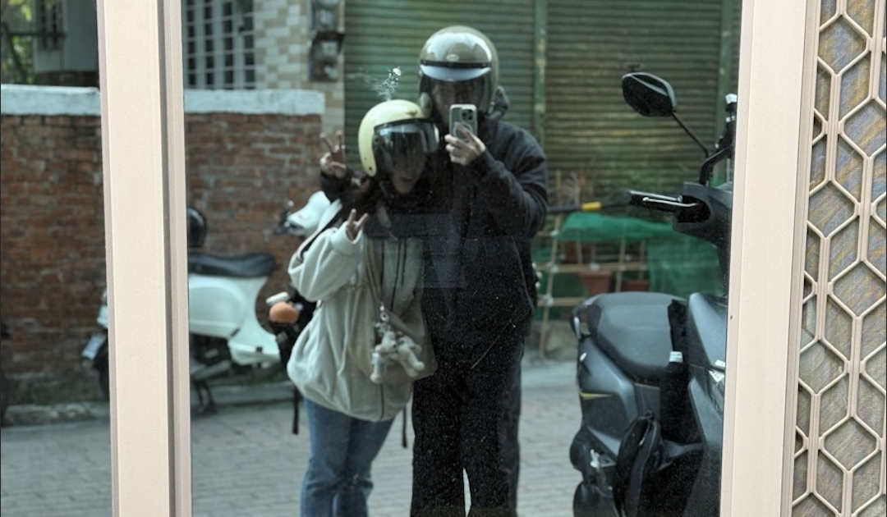

01

第一次旅行
在學期中很突然的約了妳去我最喜歡的台南旅行，而且才剛交往沒多久，謝謝妳很忙還是把事情做完陪我去。如果再讓我選一個地方一起去旅行我還是會選台南！
2024/12

在學期中很突然的約了妳去我最喜歡的台南旅行，而且才剛交往沒多久，謝謝妳很忙還是把事情做完陪我去。如果再讓我選一個地方一起去旅行我還是會選台南！
雖然當初交往就知道下學期要出國，但要出國的時候還是很捨不得。謝謝妳在我面對未知的時候陪著我，還和爸爸媽媽一起送機，我愛妳們。
在美國每天都很想妳，謝謝妳就算有時差還是每天和我視訊，和我分享很多很多事。因為有妳我才能撐過這段時間，愛妳ㄡ。
可以在大學的最後遇見妳真的太幸運了，很高興可以和妳一起走過這個人生的里程碑。
終於去拍了講很久的拍貼機！因為平日都要實習，所以假日就算只是看電影、叫外賣、追劇、逛夜市這些日常小事，只要和妳一起我都覺得很幸福。